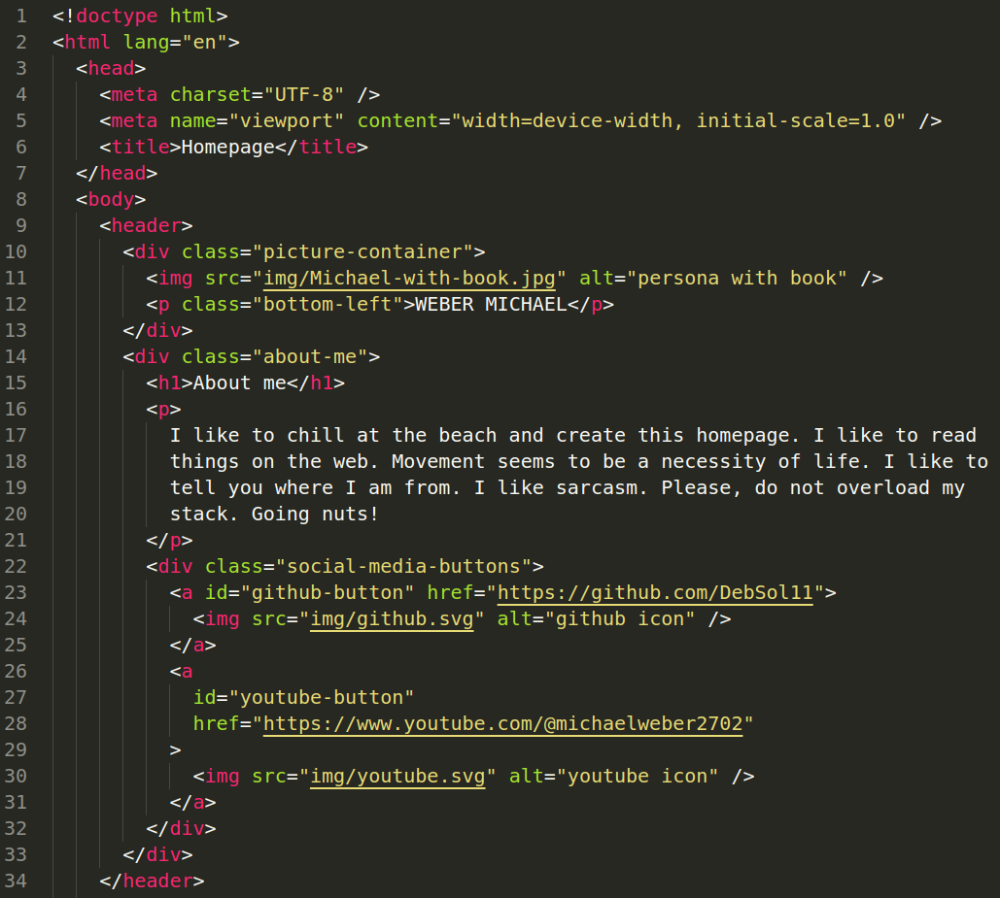

Digital designs


Learning how to design with the help of the computer.


Wings
It's time for wings.


Caring
Eieiei.

WEBER MICHAEL
I like to chill at the beach and create this homepage. I like to read things on the web. Movement seems to be a necessity of life. I like to tell you where I am from. I like sarcasm. Please, do not overload my stack. Going nuts!

Learning how to design with the help of the computer.
It's time for wings.
Eieiei.